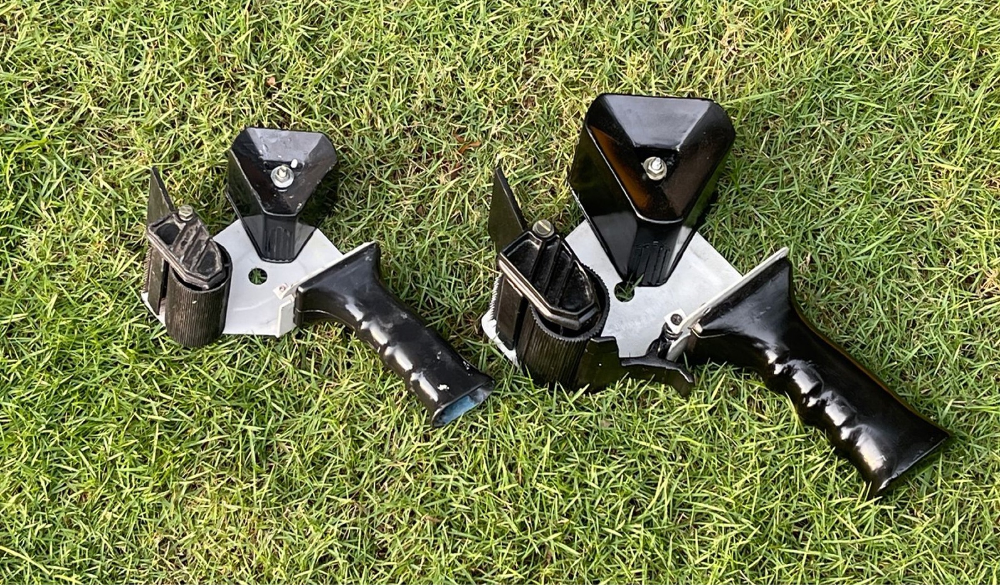
Model construction
A replica of an industrial tape dispenser, scaled up 1.25 times and built by hand, to learn how a product is put together.
Replicating one object teaches product design and engineering at once: ergonomics, function, material selection, feasibility and aesthetics.
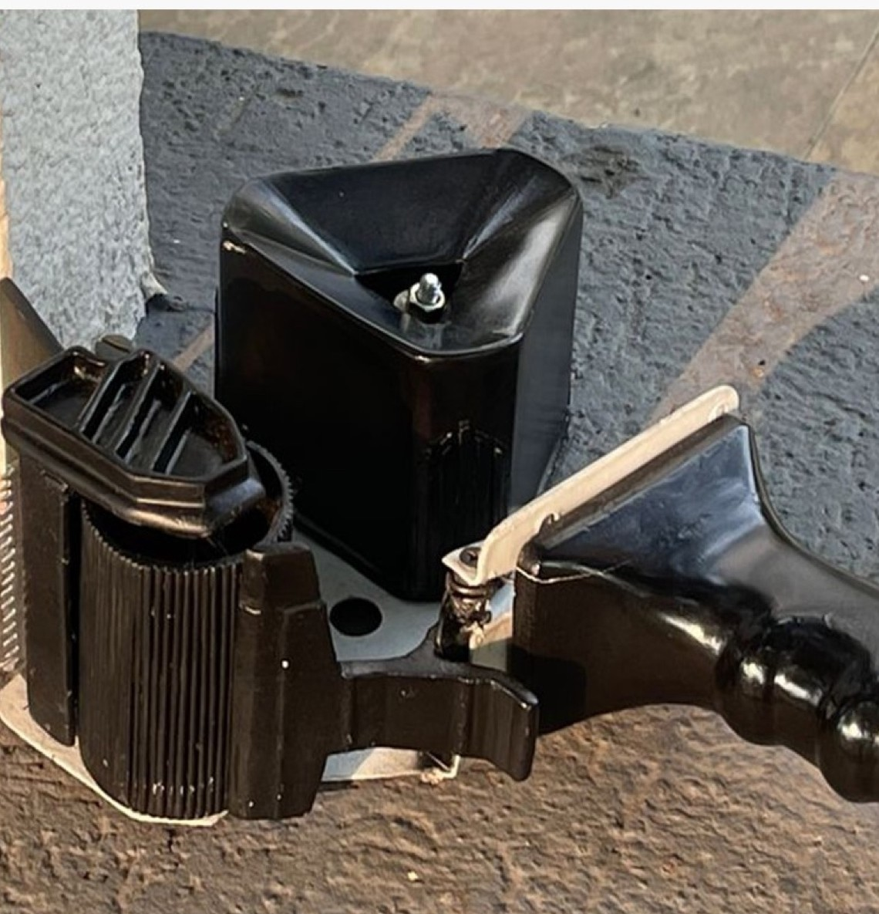
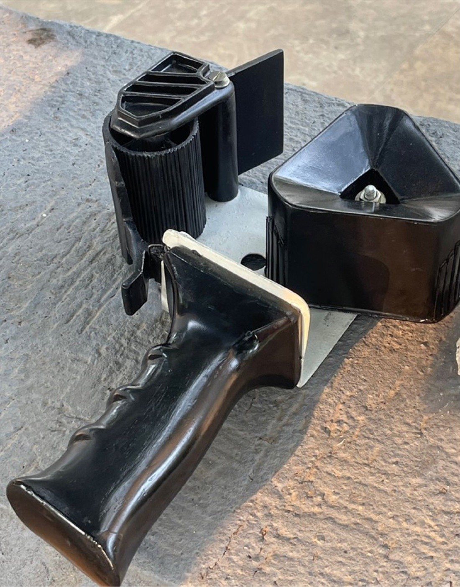
I drew the dispenser from observation, then measured every part in dimensional drawings before building anything.
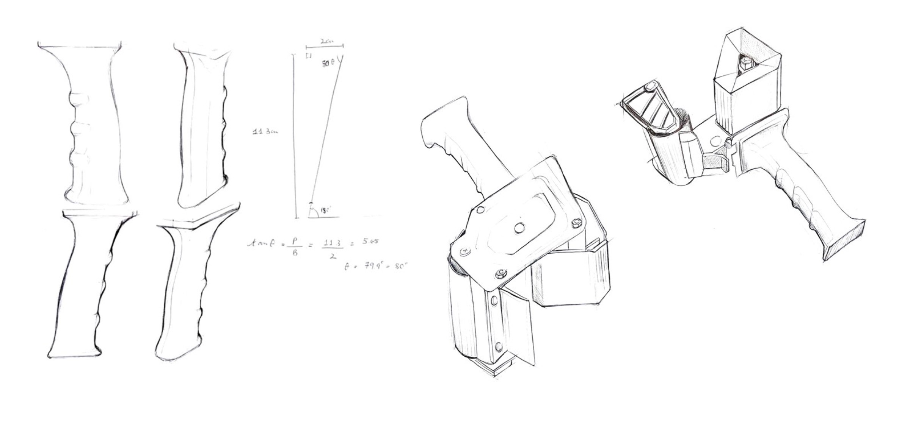
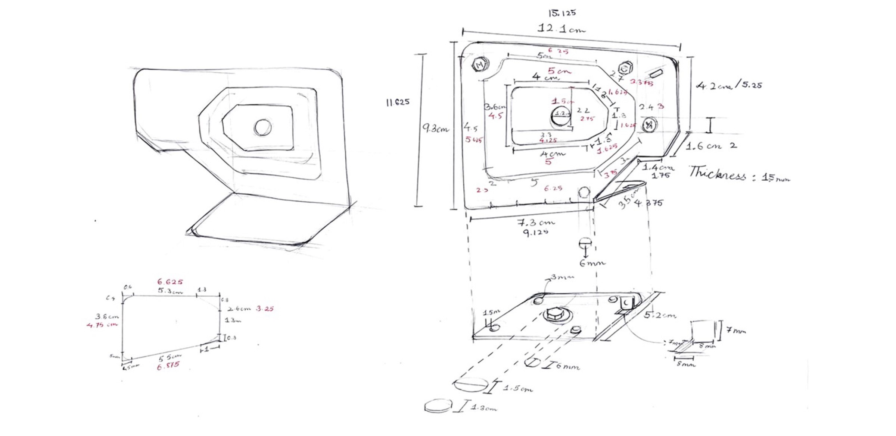
I made each part in cardboard, clay and thermocol. A soft model and a quick "jugaad" model came first.
I kept asking: why does it have this form, why is it inclined at this angle, where else have I seen this texture, and which material and process should make the final part?
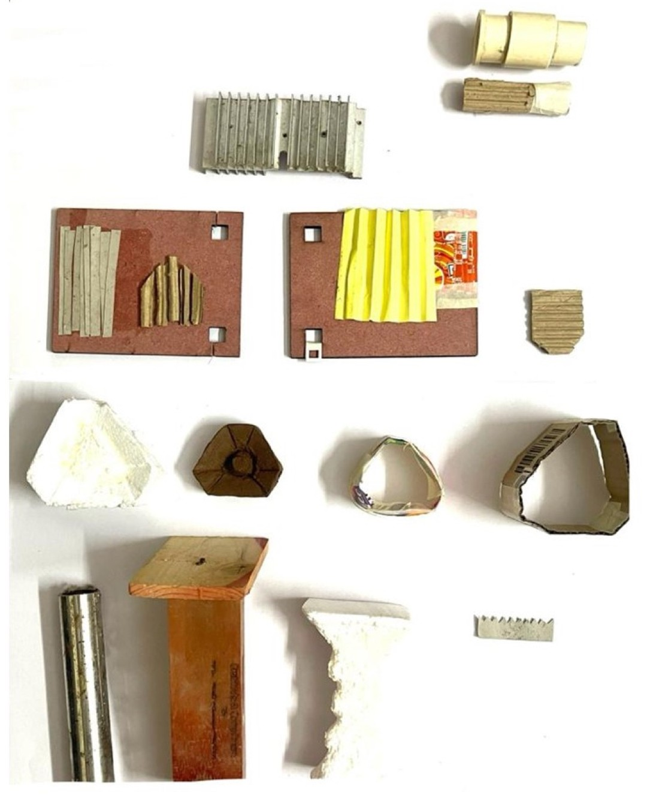
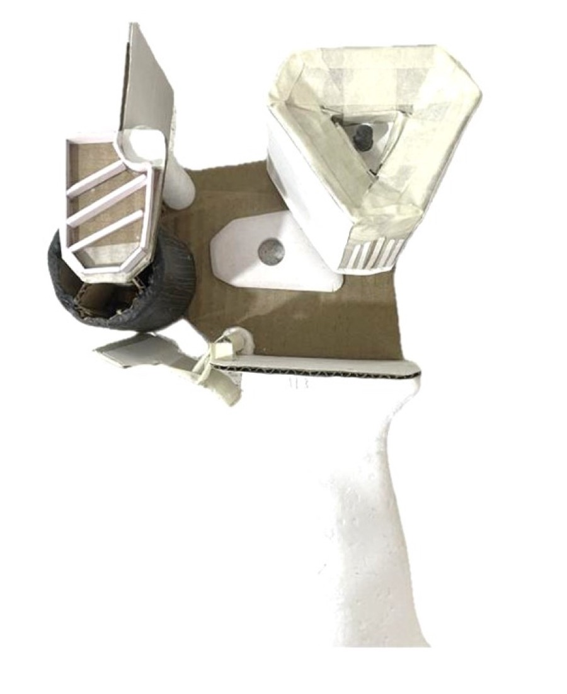
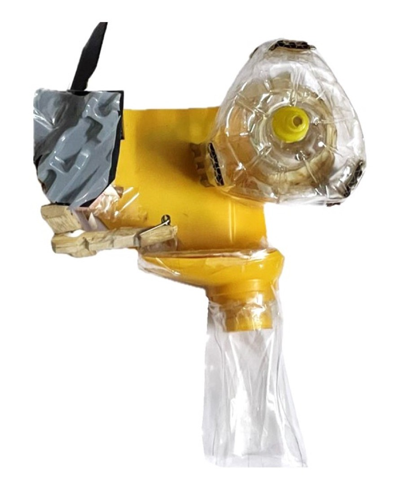
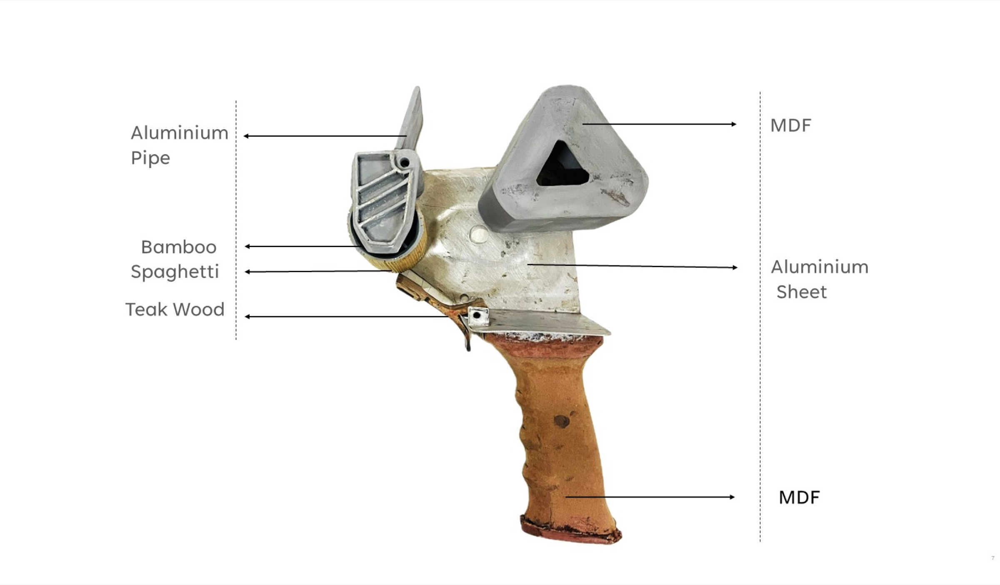
Every part needed its own answer. The handle was the toughest: getting its curves and dimensions right took constant comparison with the original.
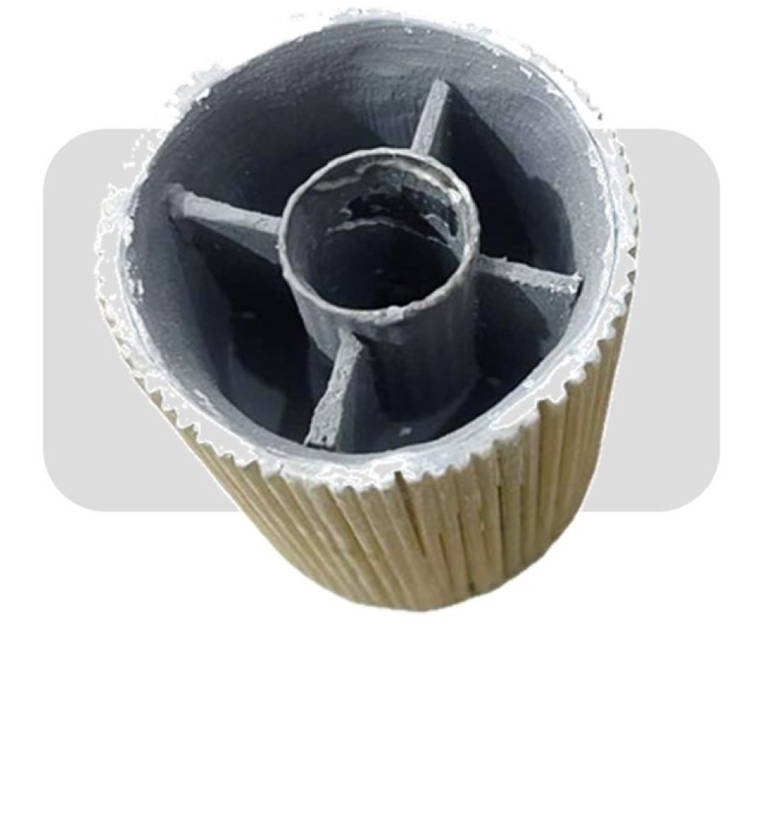
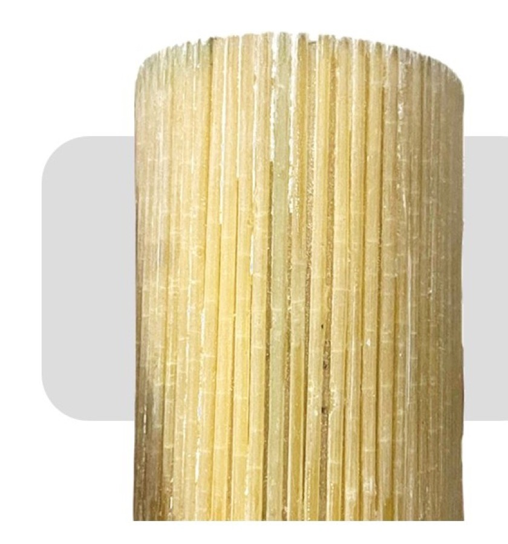
A bamboo piece of the exact diameter, thinned on one side, with an aluminium pipe and MDF inside.
After laser cutting and M-seal failed, spaghetti gave the linear texture with no finishing.
Cut whole so it is strong enough to work.
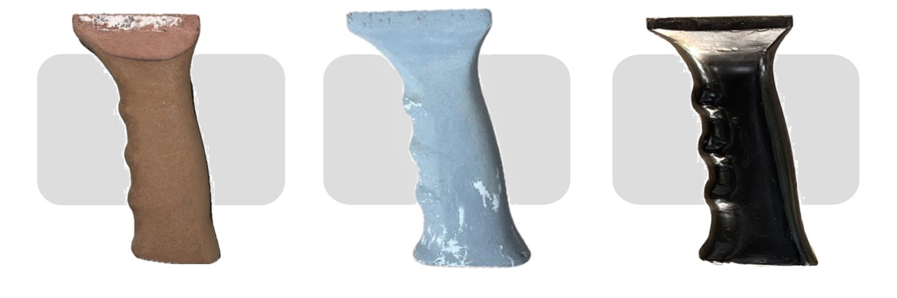
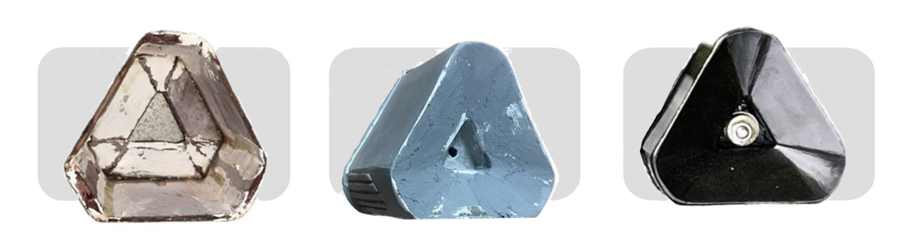
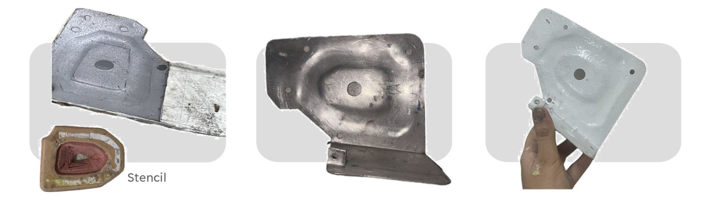
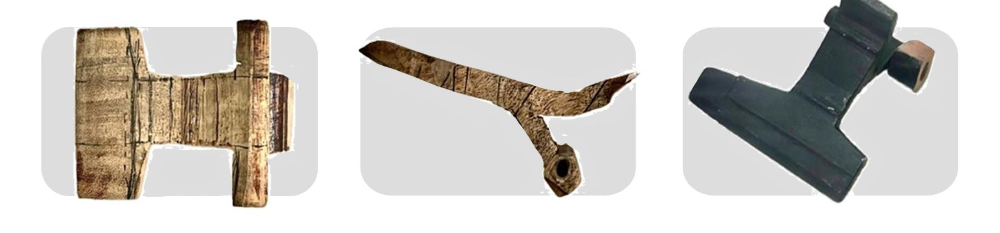
Three to four layers of grey putty, one to two coats of spray paint, then 500-grit sandpaper for a high-quality finish.
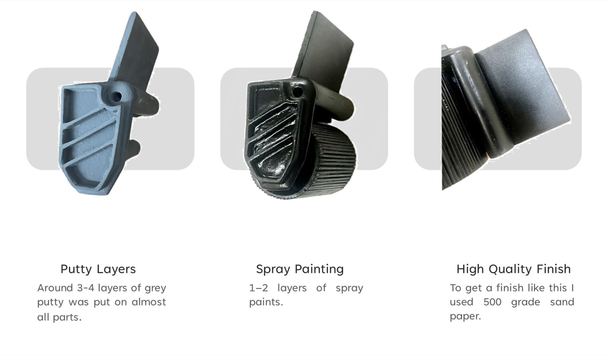
Built by hand, at 1.25 times the size of the original, and finished to look like a factory part.
“Beautiful work!” “Really nice.” “Nicely documented.”
Shaardul Pandey, Anand Raj and Prateechee Prusty, on Behance